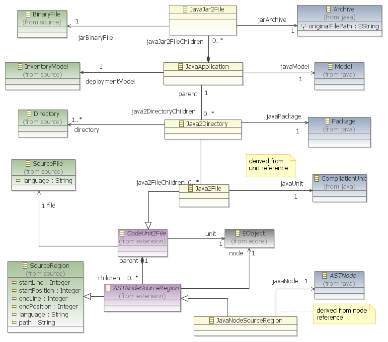

This JavaApplication metamodel aims at weaving a MoDisco Java Model with a MoDisco KDM Inventory Model. It relies on the core metamodel described in the kdm.source extension framework.
Such a metamodel allows linking java nodes to their physical position in the source files ( JavaNodeSourceRegion metaclass owning startLine, endLine properties).
As proposed in the kdm.source extension framework, the reference JavaASTNodeSourceRegion.javaNode derives from ASTNodeSourceRegion.node. So does Java2File.javaUnit from CodeUnit2File.unit.

Note : the references java2DirectoryChildren and java2FileChildren are expected to be containment references. For some technical reasons (memory usage tuning via lazy loading), they are not containments to make sure that the Java2Directory, Java2File and JavaNodeSourceRegion instances are managed in their own graph compared with JavaApplication instances (see benchmark).